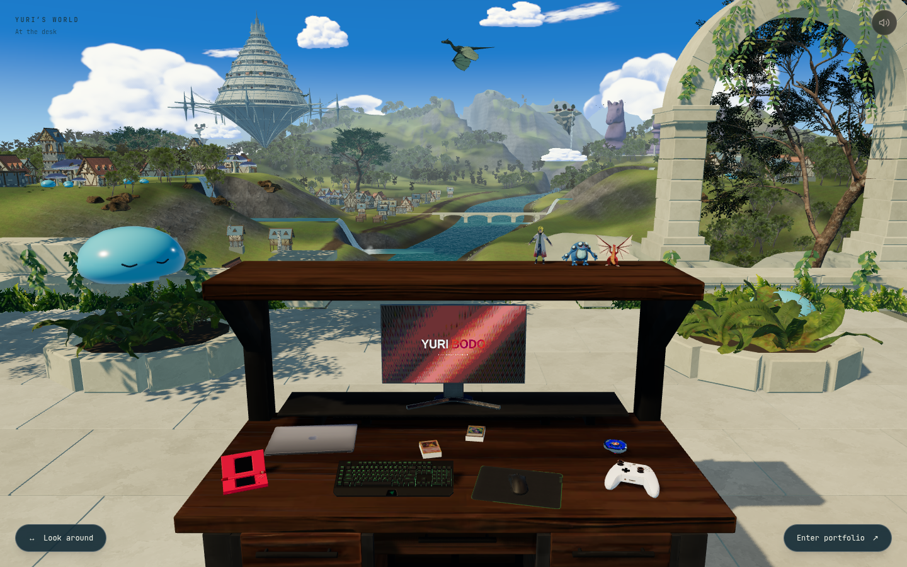
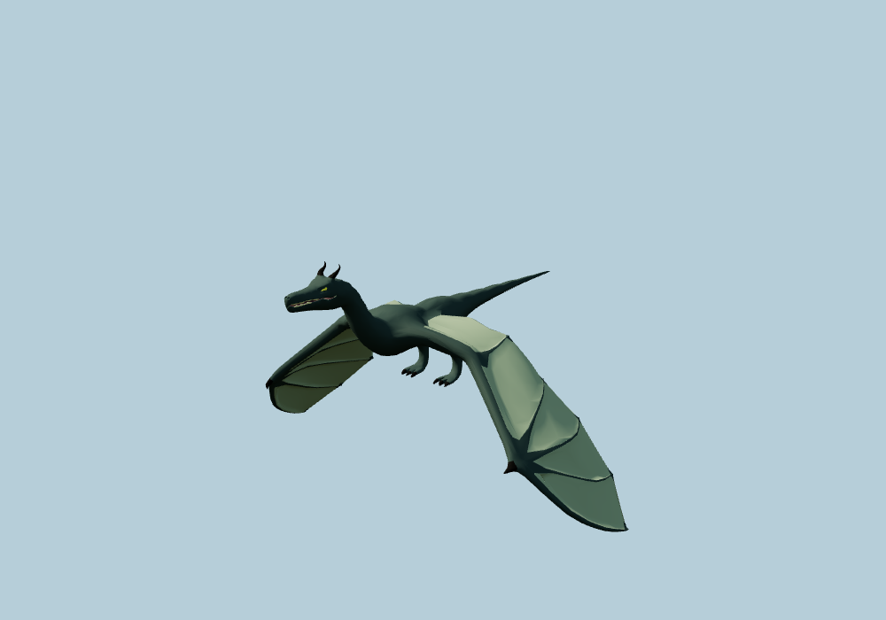
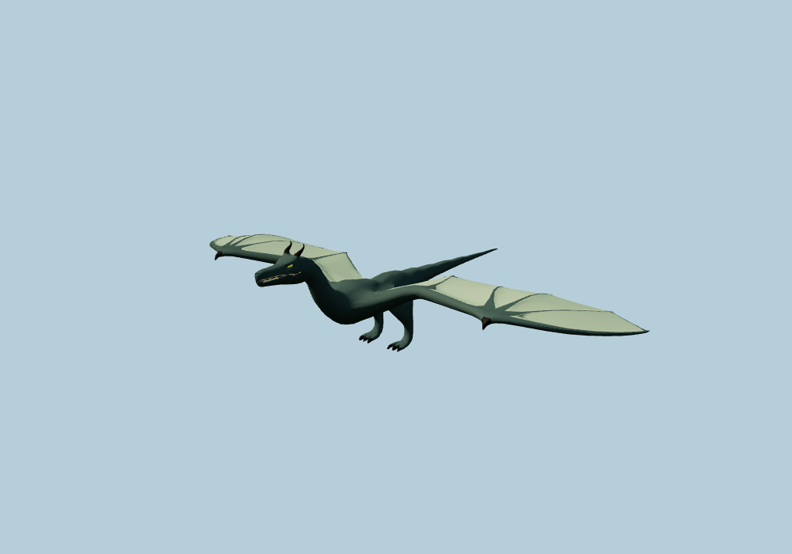

Skybound · At the desk
Um vale habitado por criaturas de fantasia.
Slimes azuis e espíritos de folhas substituem os cervos. Quatro povoados, bosques mais densos, árvores antigas e clareiras de cogumelos ocupam os patamares do vale. A mesa mantém sua composição.


Esta revisãoAntesAbrir print completo · Abrir o site local · Registro técnico
Voo, habitantes e água em movimento
Gravação de 18 segundos da cena real: batidas de asa e planeio, movimentos dos slimes, bandos de pássaros e fluxo das cachoeiras.
A articulação do dragão
Inspeção isolada do mesmo modelo e dos mesmos controles de voo usados no site. O ombro move a asa inteira; o antebraço acompanha com atraso. O corpo segue a tangente da trajetória e inclina durante as curvas.

Batida de asa
PlaneioO que mudou nas cachoeiras
As quedas ficaram mais íngremes, com uma malha de terreno mais precisa nos trechos necessários. O leito deixa espaço sob a lâmina d’água; o encontro com o rio fica acima da oscilação das ondas. Espuma e névoa se concentram nas zonas de impacto.
Esta é uma revisão de composição, habitantes e movimento. Os slimes e espíritos são modelos originais inspirados no universo dos animes; a arquitetura reaproveita os modelos existentes. O terreno e os materiais ainda têm espaço para refinamento.